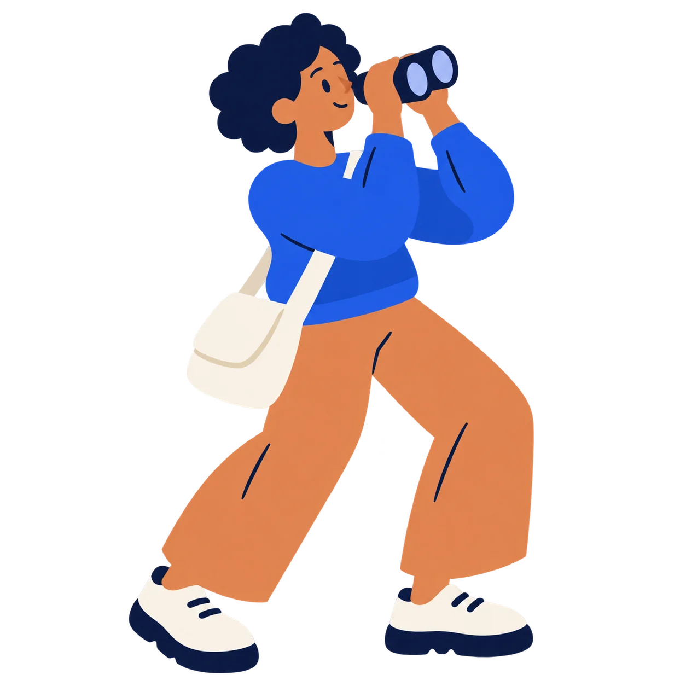
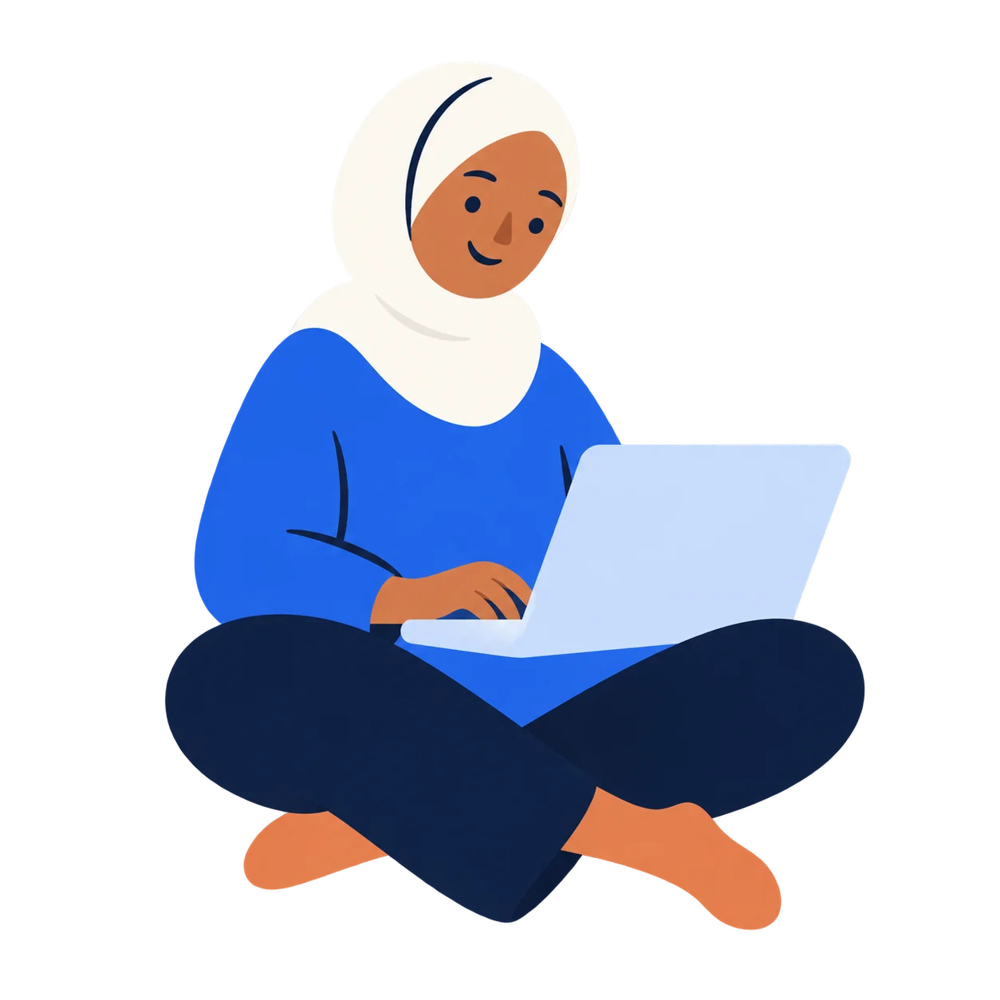
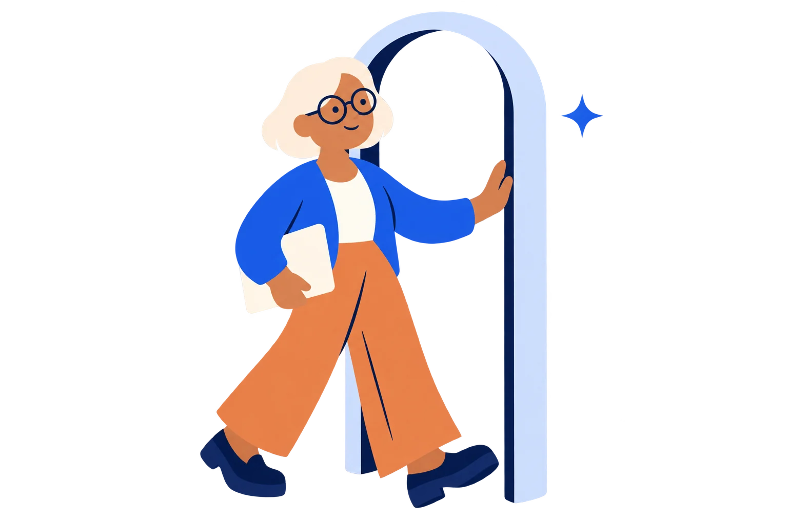
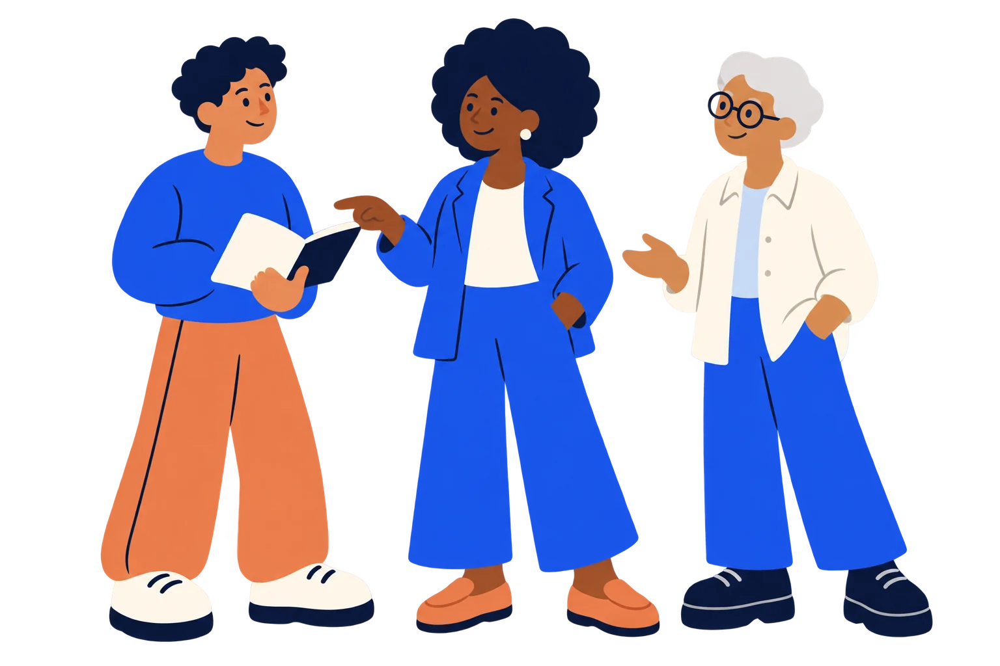

Big possibilities. Simple shapes.
Nextward flat cartoon collection · Six transparent illustrations · PNG + WebP

01 / Opportunity explorer
Discovery, opportunity search, or an opening video character.
PNGWebP

02 / Professional on the move
Professional audience sections, career momentum, or animated walk-on.
PNGWebP


03 / Remote creator
Remote work, flexible opportunities, or a calm video moment.
PNGWebP

04 / Focused designer
Inclusive work imagery, candidate sections, or a standalone video character.
PNGWebP


05 / Next chapter
Career changes, returning to work, or a transition scene.
PNGWebP


06 / Better together
Employer sections, community, team building, or a closing video scene.
PNGWebP

Text-free transparent assets. Character PNGs: 1254 × 1254. Scene PNGs: 1536 × 1024. Use PNG for video and WebP for the website.